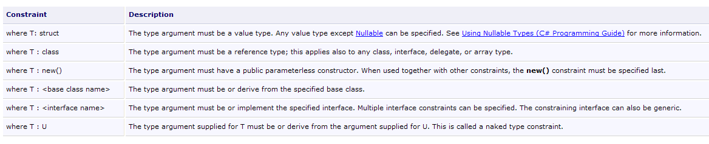

4. Clases, estructuras, interfaces
4.1. El objeto como ejemplo
4.1.1. General
Pasamos ahora a la programación orientada a objetos a modo de ejemplo. Un objeto es una entidad que contiene datos que definen su estado (denominados campos, atributos, etc.) y funciones (denominadas métodos). Un objeto se crea según un modelo denominado clase:
public class C1{
Type1 p1 ; // field p1
Type2 p2 ; // p2 field
…
Type3 m3(… ) { // m3 method
…
}
Type4 m4(… ) { // m4 method
…
}
…
}
A partir de la clase C1 anterior, se pueden crear numerosos objetos O1, O2, … Todos tendrán campos p1, p2, … y métodos m3, m4, … Pero tendrán valores diferentes para sus campos pi, cada uno con su propio estado. Si o1 es un objeto de tipo C1, o1.p1 designa la propiedad p1 de o1 y o1.m1 el método m1 de O1.
Consideremos un primer modelo de objetos: la Persona.
4.1.2. Creación de un proyecto C#
En los ejemplos anteriores, solo teníamos un único archivo: Program.cs. A partir de ahora, podremos tener varios archivos fuente en un mismo proyecto. Te mostraremos cómo hacerlo.
 |
En [1], crea un nuevo proyecto. En [2], selecciona «Aplicación de consola». En [3], deja el valor predeterminado. En [4], confirma. En [5], el proyecto generado. El contenido de Program.cs es el siguiente:
using System;
using System.Collections.Generic;
using System.Linq;
using System.Text;
namespace ConsoleApplication1 {
class Program {
static void Main(string[] args) {
}
}
}
Guardemos el proyecto creado:
 |
En [1], la opción que se va a guardar. En [2], selecciona la carpeta en la que guardar el proyecto. En [3], asigna un nombre al proyecto. En [5], indica que deseas crear una solución. Una solución es un conjunto de proyectos. En [4], asigna un nombre a la solución. En [6], confirma el guardado.
 |
En [1], el proyecto guardado. En [2], añada un nuevo elemento al proyecto.
 |
En [1], indica que deseas añadir una clase. En [2], introduce el nombre de la clase. En [3], valida la información. En [4], el proyecto [01] tiene un nuevo archivo fuente Personne.cs:
using System;
using System.Collections.Generic;
using System.Linq;
using System.Text;
namespace ConsoleApplication1 {
class Personne {
}
}
Cambia el espacio de nombres de cada archivo fuente a Chap2 y elimina la necesidad de importar espacios de nombres innecesarios:
using System;
namespace Chap2 {
class Personne {
}
}
using System;
namespace Chap2 {
class Program {
static void Main(string[] args) {
}
}
}
4.1.3. Definición de la clase Person
La definición de la clase Person en el archivo fuente [Personne.cs] será la siguiente:
using System;
namespace Chap2 {
public class Personne {
// attributes
private string prenom;
private string nom;
private int age;
// method
public void Initialise(string P, string N, int age) {
this.prenom = P;
this.nom = N;
this.age = age;
}
// method
public void Identifie() {
Console.WriteLine("[{0}, {1}, {2}]", prenom, nom, age);
}
}
}
Aquí tenemos la definición de una clase, es decir, un tipo de datos. Cuando creamos variables de este tipo, las llamamos objetos o instancias de la clase. Una clase es, por lo tanto, un molde a partir del cual se construyen los objetos.
Los miembros o campos de una clase pueden ser datos (atributos), métodos (funciones) o propiedades. Las propiedades son métodos especiales que se utilizan para obtener o establecer el valor de los atributos de un objeto. Estos campos pueden ir acompañados de una de las tres palabras clave siguientes:
Solo se puede acceder a un campo privado mediante los métodos internos de la clase | |
Se puede acceder a un campo público desde cualquier método, esté definido o no dentro de la | |
A un campo protegido (protected) solo pueden acceder los métodos internos de la clase o un objeto derivado (véase más adelante el concepto de herencia). |
En general, los datos de la clase se declaran como privados, mientras que sus métodos y propiedades se declaran como públicos. Esto significa que el usuario de un objeto (el programador)
- no tendrá acceso directo a los datos privados del objeto
- podrá invocar los métodos públicos del objeto y, en particular, aquellos que proporcionan acceso a sus datos privados.
La sintaxis para declarar una clase en C es la siguiente:
public class C{
private donnée ou méthode ou propriété privée;
public donnée ou méthode ou propriété publique;
protected donnée ou méthode ou propriété protégée;
}
El orden de declaración de los atributos private, protected y public es arbitrario.
4.1.4. El método Initialize
Volvamos a nuestra clase Person declarada como:
using System;
namespace Chap2 {
public class Personne {
// attributes
private string prenom;
private string nom;
private int age;
// method
public void Initialise(string p, string n, int age) {
this.prenom = p;
this.nom = n;
this.age = age;
}
// method
public void Identifie() {
Console.WriteLine("[{0}, {1}, {2}]", prenom, nom, age);
}
}
}
¿Cuál es la función de Initializes? Dado que el apellido, el nombre y la edad son datos privados de la clase Person, instrucciones:
son ilegales. Necesitamos inicializar un objeto de tipo Persona mediante un método público. Esta es la función de Initializes. Escribimos:
Escribir p1.Initialise es válido porque Initializes es de acceso público.
4.1.5. El operador new
La secuencia de instrucciones
es incorrecta. La instrucción
indica que p1 es una referencia a un objeto de tipo Person. Este objeto aún no existe, por lo que p1 no está inicializado. Es como escribir:
donde la palabra clave null indica que la variable p1 aún no hace referencia a ningún objeto. Cuando luego escribes
utilizamos el método Initialize del objeto al que hace referencia p1. Si este objeto aún no existe, el compilador señalará el error. Para asegurarte de que p1 hace referencia a un objeto, escribe:
Esto crea un objeto de tipo Persona que aún no se ha inicializado: los atributos «nombre» y «apellido», que son referencias a objetos de tipo String, tendrán el valor null, y «edad» tendrá el valor 0. Por lo tanto, se produce una inicialización por defecto. Ahora que p1 hace referencia a un objeto, la instrucción de inicialización para este objeto
es válida.
4.1.6. La palabra clave this
Veamos el código de la inicialización:
public void Initialise(string p, string n, int age) {
this.prenom = p;
this.nom = n;
this.age = age;
}
La instrucción this.prenom=p significa que el nombre del objeto actual (this) recibe el valor p. La palabra clave this designa el objeto actual: aquel en el que se encuentra el método ejecutado. ¿Cómo lo sabemos? Echemos un vistazo a la inicialización del objeto al que hace referencia p1 en el programa de llamada:
Este es el método Initializes del objeto p1. Cuando este método hace referencia a this, en realidad se refiere al objeto p1. El método Initializes también se podría haber escrito de la siguiente manera:
public void Initialise(string p, string n, int age) {
prenom = p;
nom = n;
this.age = age;
}
Cuando el método de un objeto hace referencia a un atributo A de dicho objeto, escribir this.A es implícito. Debe utilizarse explícitamente cuando los identificadores entran en conflicto. Este es el caso de :
this.age=age;
donde «age» designa tanto un atributo del objeto actual como el parámetro «age» recibido por el método. La ambigüedad debe resolverse, por tanto, designando el atributo «age» mediante «this.age».
4.1.7. Un programa de prueba
Aquí hay un breve programa de prueba. Está escrito en el archivo fuente [Program.cs]:
using System;
namespace Chap2 {
class P01 {
static void Main() {
Personne p1 = new Personne();
p1.Initialise("Jean", "Dupont", 30);
p1.Identifie();
}
}
}
Antes de ejecutar el proyecto [01], es posible que tengas que especificar el archivo fuente que se va a ejecutar:
 |
En las propiedades del proyecto [01], la clase que se va a ejecutar se indica en [1].
Los resultados obtenidos al finalizar son los siguientes:
4.1.8. Otro método: Inicializar
Consideremos la clase Person y añadamos el siguiente método:
public void Initialise(Personne p) {
prenom = p.prenom;
nom = p.nom;
age = p.age;
}
Ahora tenemos dos métodos con el nombre Initializes: esto es válido siempre que admitan parámetros diferentes. Este es el caso aquí. El parámetro es ahora una referencia p a una persona. Los atributos de la persona p se asignan entonces al objeto actual (this). Tenga en cuenta que Initializes tiene acceso directo a los atributos del objeto p, aunque estos sean privados. Esto siempre es cierto: un objeto o1 de una clase C siempre tiene acceso a los atributos de los objetos de la misma clase C.
Aquí hay una prueba de la nueva clase Person:
using System;
namespace Chap2 {
class Program {
static void Main() {
Personne p1 = new Personne();
p1.Initialise("Jean", "Dupont", 30);
p1.Identifie();
Personne p2 = new Personne();
p2.Initialise(p1);
p2.Identifie();
}
}
}
y sus resultados:
4.1.9. Constructores de la clase Person
Un constructor es un método que lleva el nombre de la clase y se invoca cuando se crea el objeto. Se utiliza generalmente para inicializar el objeto. Puede aceptar argumentos, pero no devuelve ningún resultado. Su prototipo o definición no va precedido de ningún tipo (ni siquiera void).
Si una clase C tiene un constructor que acepta n argumentos argi, la declaración e inicialización de un objeto de esta clase se puede realizar de la forma:
o
Cuando una clase C tiene uno o más constructores, se debe utilizar uno de ellos para crear un objeto de esta clase. Si una clase C no tiene ningún constructor, dispone de uno por defecto, que es el constructor sin parámetros: public C(). Los atributos del objeto se inicializan entonces con valores por defecto. Esto es lo que ocurría en los programas anteriores, donde:
Creemos dos constructores para nuestra clase Person:
using System;
namespace Chap2 {
public class Personne {
// attributes
private string prenom;
private string nom;
private int age;
// manufacturers
public Personne(String p, String n, int age) {
Initialise(p, n, age);
}
public Personne(Personne P) {
Initialise(P);
}
// method
public void Initialise(string p, string n, int age) {
...
}
public void Initialise(Personne p) {
...
}
// method
public void Identifie() {
Console.WriteLine("[{0}, {1}, {2}]", prenom, nom, age);
}
}
}
Nuestros dos constructores simplemente utilizan los Initializes estudiados anteriormente. Recuerda que cuando un programador utiliza la notación Initialise(p), por ejemplo, el compilador lo traduce como this.Initialise(p). En el constructor, se invoca el Initializes para que actúe sobre el objeto al que hace referencia this, es decir, el objeto actual, el que se está construyendo.
Aquí hay un breve programa de prueba:
using System;
namespace Chap2 {
class Program {
static void Main() {
Personne p1 = new Personne("Jean", "Dupont", 30);
p1.Identifie();
Personne p2 = new Personne(p1);
p2.Identifie();
}
}
}
y los resultados obtenidos:
4.1.10. Referencias a objetos
Siempre utilizamos la misma persona. El programa de prueba queda así:
using System;
namespace Chap2 {
class Program2 {
static void Main() {
// p1
Personne p1 = new Personne("Jean", "Dupont", 30);
Console.Write("p1="); p1.Identifie();
// p2 references the same object as p1
Personne p2 = p1;
Console.Write("p2="); p2.Identifie();
// p3 references an object that will be a copy of the object referenced by p1
Personne p3 = new Personne(p1);
Console.Write("p3="); p3.Identifie();
// change the state of the object referenced by p1
p1.Initialise("Micheline", "Benoît", 67);
Console.Write("p1="); p1.Identifie();
// as p2=p1, the object referenced by p2 must have changed state
Console.Write("p2="); p2.Identifie();
// as p3 does not reference the same object as p1, the object referenced by p3 must not have changed
Console.Write("p3="); p3.Identifie();
}
}
}
Los resultados son los siguientes:
Al declarar la variable p1 mediante
p1 es una referencia al objeto Personne("John", "Smith", 30), pero no es el objeto en sí. En C, diríamos que es un puntero, es decir, la dirección del objeto creado. Si luego escribes:
No es el objeto Person("John", "Smith", 30) el que se modifica, sino la referencia p1 la que cambia de valor. El objeto Person("John", "Smith", 30) se «perderá» si no es referenciado por ninguna otra variable.
Cuando escribimos:
inicializamos el puntero p2: este «apunta» al mismo objeto (designa el mismo objeto) que el puntero p1. Por lo tanto, si modificamos el objeto «al que apunta» (o al que hace referencia) p1, también modificamos el que hace referencia p2.
Cuando escribimos:
se crea un nuevo objeto Person. Este nuevo objeto será referenciado por p3. Si modificas el objeto «al que apunta» (o al que hace referencia) p1, también se modificará el que hace referencia p3. Esto es lo que muestran los resultados.
4.1.11. Pasar parámetros de referencia de objetos
En el capítulo anterior, vimos cómo se pasan los parámetros de función cuando representan un tipo simple de C# representado por una estructura .NET. Veamos qué ocurre cuando el parámetro es un :
using System;
using System.Text;
namespace Chap1 {
class P12 {
public static void Main() {
// example 4
StringBuilder sb0 = new StringBuilder("essai0"), sb1 = new StringBuilder("essai1"), sb2 = new StringBuilder("essai2"), sb3;
Console.WriteLine("Dans fonction appelante avant appel : sb0={0}, sb1={1}, sb2={2}", sb0,sb1, sb2);
ChangeStringBuilder(sb0, sb1, ref sb2, out sb3);
Console.WriteLine("Dans fonction appelante après appel : sb0={0}, sb1={1}, sb2={2}, sb3={3}", sb0, sb1, sb2, sb3);
}
private static void ChangeStringBuilder(StringBuilder sbf0, StringBuilder sbf1, ref StringBuilder sbf2, out StringBuilder sbf3) {
Console.WriteLine("Début fonction appelée : sbf0={0}, sbf1={1}, sbf2={2}", sbf0,sbf1, sbf2);
sbf0.Append("*****");
sbf1 = new StringBuilder("essai1*****");
sbf2 = new StringBuilder("essai2*****");
sbf3 = new StringBuilder("essai3*****");
Console.WriteLine("Fin fonction appelée : sbf0={0}, sbf1={1}, sbf2={2}, sbf3={3}", sbf0, sbf1, sbf2, sbf3);
}
}
}
- línea 8: define 3 StringBuilder. Un objeto StringBuilder es similar a un objeto string. Al manipular un objeto string, se obtiene un nuevo objeto string a cambio. Por lo tanto, en la secuencia de código:
La línea 1 crea una cadena y s es su dirección. En la línea 2, s.ToUpperCase() crea otro objeto de cadena en la memoria. Por lo tanto, entre las líneas 1 y 2, s ha cambiado de valor (ahora apunta al nuevo objeto). La clase StringBuilder permite modificar una cadena sin crear un segundo objeto. Este es el ejemplo que se ha mostrado anteriormente:
- línea 8: 4 referencias [sb0, sb1, sb2, sb3] a objetos de tipo StringBuilder
- línea 10: se pasan a ChangeStringBuilder con diferentes modos: sb0, sb1 con el modo predeterminado, sb2 con la palabra clave ref, sb3 con la palabra clave out.
- líneas 15-22: un método con parámetros formales [sbf0, sbf1, sbf2, sbf3]. Las relaciones entre los parámetros formales sbfi y la fuerza de trabajo sbi son las siguientes:
- sbf0 y sb0 son, al inicio del método, dos referencias distintas que apuntan al mismo objeto (paso por valor de dirección)
- Lo mismo ocurre con sbf1 y sb1
- sbf2 y sb2 son, al inicio del método, una misma referencia al mismo objeto (palabra clave ref)
- sbf3 y sb3 son, tras la ejecución del método, una misma referencia al mismo objeto (palabra clave out)
Los resultados son los siguientes:
Explicaciones:
- sb0 y sbf0 son dos referencias distintas al mismo objeto. Este ha sido modificado a través de sbf0 (línea 3). Esta modificación se puede ver a través de sb0 (línea 4).
- sb1 y sbf1 son dos referencias distintas al mismo objeto. sbf1 se modifica en el método y ahora apunta a un nuevo objeto (línea 3). Esto no cambia el valor de sb1, que sigue apuntando al mismo objeto (línea 4).
- sb2 y sbf2 son la misma referencia al mismo objeto. sbf2 se modifica en el método y ahora apunta a un nuevo objeto (línea 3). Como sbf2 y sb2 son una sola entidad, el valor de sb2 también se ha modificado y sb2 apunta al mismo objeto que sbf2 (líneas 3 y 4).
- Antes de llamar al método, sb3 no tenía ningún valor. Tras el método, sb3 recibe el valor de sbf3. Por lo tanto, tenemos dos referencias al mismo objeto: líneas 3 y 4
4.1.12. Objetos temporales
En una expresión, podemos invocar explícitamente el constructor de un objeto: este se crea, pero no tenemos acceso a él (para modificarlo, por ejemplo). Este objeto temporal se crea con el fin de evaluar la expresión y, a continuación, se descarta. El espacio de memoria que ocupa es recuperado automáticamente más tarde por un programa denominado «reciclador de basura», cuya función es recuperar el espacio de memoria ocupado por objetos a los que ya no hacen referencia los datos del programa.
Consideremos el siguiente programa de prueba nuevo:
using System;
namespace Chap2 {
class Program {
static void Main() {
new Personne(new Personne("Jean", "Dupont", 30)).Identifie();
}
}
}
y modifica los constructores de la clase Person para que muestren un mensaje:
// manufacturers
public Personne(String p, String n, int age) {
Console.WriteLine("Constructeur Personne(string, string, int)");
Initialise(p, n, age);
}
public Personne(Personne P) {
Console.Out.WriteLine("Constructeur Personne(Personne)");
Initialise(P);
}
Obtenemos los siguientes resultados:
que muestra la construcción sucesiva de los dos objetos temporales.
4.1.13. Métodos para leer y escribir atributos privados
Añadimos a la clase Person métodos para leer o modificar el estado de los atributos del objeto:
using System;
namespace Chap2 {
public class Personne {
// attributes
private string prenom;
private string nom;
private int age;
// manufacturers
public Personne(String p, String n, int age) {
Console.WriteLine("Constructeur Personne(string, string, int)");
Initialise(p, n, age);
}
public Personne(Personne p) {
Console.Out.WriteLine("Constructeur Personne(Personne)");
Initialise(p);
}
// method
public void Initialise(string p, string n, int age) {
this.prenom = p;
this.nom = n;
this.age = age;
}
public void Initialise(Personne p) {
prenom = p.prenom;
nom = p.nom;
age = p.age;
}
// accessors
public String GetPrenom() {
return prenom;
}
public String GetNom() {
return nom;
}
public int GetAge() {
return age;
}
//modifiers
public void SetPrenom(String P) {
this.prenom = P;
}
public void SetNom(String N) {
this.nom = N;
}
public void SetAge(int age) {
this.age = age;
}
// method
public void Identifie() {
Console.WriteLine("[{0}, {1}, {2}]", prenom, nom, age);
}
}
}
Probamos la nueva clase con el siguiente programa:
using System;
namespace Chap2 {
class Program {
static void Main(string[] args) {
Personne p = new Personne("Jean", "Michelin", 34);
Console.Out.WriteLine("p=(" + p.GetPrenom() + "," + p.GetNom() + "," + p.GetAge() + ")");
p.SetAge(56);
Console.Out.WriteLine("p=(" + p.GetPrenom() + "," + p.GetNom() + "," + p.GetAge() + ")");
}
}
}
y obtenemos los resultados:
4.1.14. Las propiedades
Otra forma de acceder a los atributos de una clase es crear propiedades. Estas nos permiten manipular los atributos privados como si fueran públicos.
Consideremos la clase Personas, en la que los accesores y modificadores anteriores han sido sustituidos por propiedades de lectura y escritura:
using System;
namespace Chap2 {
public class Personne {
// attributes
private string prenom;
private string nom;
private int age;
// manufacturers
public Personne(String p, String n, int age) {
Initialise(p, n, age);
}
public Personne(Personne p) {
Initialise(p);
}
// method
public void Initialise(string p, string n, int age) {
this.prenom = p;
this.nom = n;
this.age = age;
}
public void Initialise(Personne p) {
prenom = p.prenom;
nom = p.nom;
age = p.age;
}
// properties
public string Prenom {
get { return prenom; }
set {
// valid first name?
if (value == null || value.Trim().Length == 0) {
throw new Exception("prénom (" + value + ") invalide");
} else {
prenom = value;
}
}//if
}//first name
public string Nom {
get { return nom; }
set {
// valid name?
if (value == null || value.Trim().Length == 0) {
throw new Exception("nom (" + value + ") invalide");
} else { nom = value; }
}//if
}//name
public int Age {
get { return age; }
set {
// valid age?
if (value >= 0) {
age = value;
} else
throw new Exception("âge (" + value + ") invalide");
}//if
}//age
// method
public void Identifie() {
Console.WriteLine("[{0}, {1}, {2}]", prenom, nom, age);
}
}
}
Una propiedad te permite leer (obtener) o establecer (fijar) el valor de un atributo. Una propiedad se declara de la siguiente manera:
donde Type debe ser el tipo del atributo gestionado por la propiedad. Puede tener dos métodos llamados get y set. El método get suele encargarse de mostrar el valor del atributo que gestiona (aunque podría mostrar otra cosa; nada lo impide). El método set recibe un parámetro llamado value que, normalmente, asigna al atributo que gestiona. Puede aprovechar esto para comprobar la validez del valor recibido y, si es necesario, lanzar una excepción si el valor resulta ser inválido. Esto es lo que hace ici.
¿Cómo se invocan estos métodos get y set? Consideremos el siguiente programa de prueba:
using System;
namespace Chap2 {
class Program {
static void Main(string[] args) {
Personne p = new Personne("Jean", "Michelin", 34);
Console.Out.WriteLine("p=(" + p.Prenom + "," + p.Nom + "," + p.Age + ")");
p.Age = 56;
Console.Out.WriteLine("p=(" + p.Prenom + "," + p.Nom + "," + p.Age + ")");
try {
p.Age = -4;
} catch (Exception ex) {
Console.Error.WriteLine(ex.Message);
}//try-catch
}
}
}
En el
Console.Out.WriteLine("p=(" + p.Prenom + "," + p.Nom + "," + p.Age + ")");
Buscamos los valores de «Prenown», «Nom» y «Age» de la persona p. Se trata de la función «get» de estas propiedades, que se invoca y devuelve el valor del atributo que gestiona.
En el
queremos establecer el valor de la propiedad Age. Este es el método set que se invoca a continuación. Recibirá 56 como valor de su parámetro.
Una propiedad P de una clase C que solo defina el método get se dice que es de solo lectura. Si c es un objeto de la clase C, el compilador rechazará la operación c.P=valor.
La ejecución del programa de prueba anterior da los siguientes resultados:
Las propiedades nos permiten manipular atributos privados como si fueran públicos. Otra característica de las propiedades es que se pueden utilizar junto con un constructor utilizando la siguiente sintaxis:
Esta sintaxis es equivalente al siguiente código:
El orden de las propiedades no importa. Aquí tienes un ejemplo.
La clase Person añade un nuevo constructor sin parámetros:
public Personne() {
}
El constructor no inicializa los miembros del objeto. Se conoce como constructor por defecto. Se utiliza cuando la clase no define un constructor.
El siguiente código crea e inicializa (línea 6) una nueva persona con la sintaxis presentada anteriormente:
using System;
namespace Chap2 {
class Program {
static void Main(string[] args) {
Personne p2 = new Personne { Age = 7, Prenom = "Arthur", Nom = "Martin" };
Console.WriteLine("p2=({0},{1},{2})", p2.Prenom, p2.Nom, p2.Age);
}
}
}
En la línea 6 anterior, se utiliza el constructor sin parámetros Person(). En este caso concreto, también podríamos haber escrito
Personne p2 = new Personne() { Age = 7, Prenom = "Arthur", Nom = "Martin" };
pero los paréntesis del constructor Person() sin parámetros no son obligatorios en esta sintaxis.
Los resultados son los siguientes:
En muchos casos, las propiedades get y set simplemente leen y escriben un campo privado sin ningún procesamiento adicional. En este caso, podemos utilizar una declaración automática como la siguiente:
El campo privado asociado a la propiedad no se declara. El compilador lo genera automáticamente. Solo se puede acceder a él a través de su propiedad. Así pues, en lugar de escribir:
private string prenom;
...
// propriété associée
public string Prenom {
get { return prenom; }
set {
// prénom valide ?
if (value == null || value.Trim().Length == 0) {
throw new Exception("prénom (" + value + ") invalide");
} else {
prenom = value;
}
}//if
}//prenom
podemos escribir:
sin declarar el campo privado first name. La diferencia entre las dos propiedades anteriores es que la primera verifica la validez del nombre en el set, mientras que la segunda no lo hace.
Utiliza la propiedad automática «First name» para declarar el campo «First name» como público:
Nos preguntamos si hay alguna diferencia entre las dos declaraciones. No se recomienda declarar público un campo de clase. Esto rompe con el concepto de encapsulación del estado de un objeto, que debe ser privado y exponerse mediante métodos públicos.
Si la propiedad automática se declara virtual, entonces se puede redefinir en una clase hija:
class Class1 {
public virtual string Prop { get; set; }
}
class Class2 : Class1 {
public override string Prop { get { return base.Prop; } set {... } }
}
En la línea 2 anterior, la clase hija Class2 puede incluir en el set código que verifique la validez del valor asignado a la propiedad automática base.Prop de la clase padre Class1.
4.1.15. Métodos y atributos de clase
Supongamos que queremos contar el número de objetos Person creados en una aplicación. Se puede gestionar un contador por cuenta propia, pero se corre el riesgo de olvidar los objetos temporales que se crean aquí o allá. Parecería más seguro incluir en los constructores de la clase Person una instrucción que incremente un contador. El problema es pasar una referencia a este contador para que el constructor pueda incrementarlo: hay que pasar un nuevo parámetro. Como alternativa, se puede incluir el contador en la definición de la clase. Dado que es un atributo de la propia clase y no de una instancia concreta de esa clase, lo declaramos de forma diferente con la palabra clave static :
private static long nbPersonnes;
Para hacer referencia a él, escribimos Personne.nbPersonnes para indicar que es un atributo de la propia clase Person. Aquí hemos creado un atributo privado al que no se podrá acceder directamente desde fuera de la clase. Por lo tanto, creamos una propiedad pública para dar acceso al atributo de clase nbPersonnes. Para devolver el valor de nbPersonnes, el método get de esta propiedad no necesita un objeto Person concreto: de hecho, nbPersonnes es el atributo de toda una clase. Así que necesitamos una propiedad declarada también como static:
public static long NbPersonnes {
get { return nbPersonnes; }
}
que desde el exterior se llamará con la sintaxis Personne.NbPersonnes. Aquí tienes un ejemplo.
La clase Ppersonnes queda así:
using System;
namespace Chap2 {
public class Personne {
// class attributes
private static long nbPersonnes;
public static long NbPersonnes {
get { return nbPersonnes; }
}
// instance attributes
private string prenom;
private string nom;
private int age;
// manufacturers
public Personne(String p, String n, int age) {
Initialise(p, n, age);
nbPersonnes++;
}
public Personne(Personne p) {
Initialise(p);
nbPersonnes++;
}
...
}
En las líneas 20 y 24, los constructores incrementan el campo estático de la línea 7.
Con el siguiente programa:
using System;
namespace Chap2 {
class Program {
static void Main(string[] args) {
Personne p1 = new Personne("Jean", "Dupont", 30);
Personne p2 = new Personne(p1);
new Personne(p1);
Console.WriteLine("Nombre de personnes créées : " + Personne.NbPersonnes);
}
}
}
obtenemos los siguientes resultados:
4.1.16. Una tabla de personas
Un objeto es un dato como cualquier otro y, como tal, se pueden reunir varios objetos en una tabla:
using System;
namespace Chap2 {
class Program {
static void Main(string[] args) {
// a table of people
Personne[] amis = new Personne[3];
amis[0] = new Personne("Jean", "Dupont", 30);
amis[1] = new Personne("Sylvie", "Vartan", 52);
amis[2] = new Personne("Neil", "Armstrong", 66);
// display
foreach (Personne ami in amis) {
ami.Identifie();
}
}
}
}
- línea 7: crea una matriz de 3 elementos de tipo Persona. Estos 3 elementos se inicializan aquí con el valor null, es decir, que no hacen referencia a ningún objeto. Una vez más, se trata de un uso incorrecto del término «matriz de objetos», cuando en realidad es solo una matriz de referencias a objetos. La creación de la matriz de objetos, que es en sí misma un objeto (por la presencia de new), no crea ningún objeto del mismo tipo que sus elementos.
- líneas 8-10: creación de 3 objetos de tipo Persona
- líneas 12-14: visualización del contenido de la tabla friends
Obtenemos los siguientes resultados:
4.2. Herencia por ejemplo
4.2.1. General
Introducimos aquí el concepto de herencia. El objetivo de la herencia es «personalizar» una clase existente para adaptarla a nuestras necesidades. Supongamos que queremos crear una clase Enstructor: un profesor es una persona especial. Tiene atributos que ninguna otra persona tendría: la asignatura que imparte, por ejemplo. Pero también tiene los atributos de cualquier otra persona: nombre, apellidos y edad. Por lo tanto, un profesor forma parte plenamente de la clase Persona, pero tiene atributos adicionales. En lugar de escribir una clase Enstructor desde cero, preferimos tomar lo que hemos aprendido en la clase Persona y adaptarlo al carácter particular de los profesores. Este es el concepto de herencia que lo hace posible.
Para expresar que la clase «Profesor» hereda propiedades de la clase «Persona», escribimos:
Person se denomina clase padre, y Enstructor, clase derivada (o hija). Un objeto Enstructor tiene todas las cualidades de un objeto Person: tiene los mismos atributos y métodos. Estos atributos y métodos de la clase padre no se repiten en la definición de la clase hija: simplemente indicamos los atributos y métodos añadidos por la clase hija:
Suponemos que la clase Person está definida de la siguiente manera:
using System;
namespace Chap2 {
public class Personne {
// class attributes
private static long nbPersonnes;
public static long NbPersonnes {
get { return nbPersonnes; }
}
// instance attributes
private string prenom;
private string nom;
private int age;
// manufacturers
public Personne(String prenom, String nom, int age) {
Nom = nom;
Prenom = prenom;
Age = age;
nbPersonnes++;
Console.WriteLine("Constructeur Personne(string, string, int)");
}
public Personne(Personne p) {
Nom = p.Nom;
Prenom = p.Prenom;
Age = p.Age;
nbPersonnes++;
Console.WriteLine("Constructeur Personne(Personne)");
}
// properties
public string Prenom {
get { return prenom; }
set {
// valid first name?
if (value == null || value.Trim().Length == 0) {
throw new Exception("prénom (" + value + ") invalide");
} else {
prenom = value;
}
}//if
}//first name
public string Nom {
get { return nom; }
set {
// valid name?
if (value == null || value.Trim().Length == 0) {
throw new Exception("nom (" + value + ") invalide");
} else { nom = value; }
}//if
}//name
public int Age {
get { return age; }
set {
// valid age?
if (value >= 0) {
age = value;
} else
throw new Exception("âge (" + value + ") invalide");
}//if
}//age
// property
public string Identite {
get { return String.Format("[{0}, {1}, {2}]", prenom, nom, age);}
}
}
}
El método Identifica ha sido sustituido por la propiedad Identity, que identifica a la persona. Creamos una clase Enstructor que hereda de Person:
using System;
namespace Chap2 {
class Enseignant : Personne {
// attributes
private int section;
// manufacturer
public Enseignant(string prenom, string nom, int age, int section)
: base(prenom, nom, age) {
// the section is saved using the Section property
Section = section;
// follow-up
Console.WriteLine("Construction Enseignant(string, string, int, int)");
}//manufacturer
// property Section
public int Section {
get { return section; }
set { section = value; }
}// Section
}
}
La clase Teacher añade a los métodos y atributos de la clase Person:
- línea 4: la clase Teacher deriva de la clase Person
- línea 6: un atributo «section», que es el número de sección al que pertenece el profesor dentro del cuerpo docente (aproximadamente una sección por disciplina). Se puede acceder a este atributo privado a través de la propiedad pública «Section» líneas 18-21
- línea 9: un nuevo constructor para inicializar todos los atributos del profesor
4.2.2. Creación de un objeto Teacher
Una clase de chicas no hereda los constructores de su clase padre. Por lo tanto, debe definir sus propios constructores. El constructor de Enstructor es el siguiente:
// manufacturer
public Enseignant(string prenom, string nom, int age, int section)
: base(prenom, nom, age) {
// section is memorized
Section = section;
// follow-up
Console.WriteLine("Construction enseignant(string, string, int, int)");
}//manufacturer
La declaración
public Enseignant(string prenom, string nom, int age, int section)
: base(prenom, nom, age) {
indica que el constructor recibe cuatro parámetros: nombre, apellidos, edad y sección, además de otros tres (nombre, apellidos, edad) de su clase base, en este caso la clase Person. Sabemos que esta clase tiene un constructor Person(string, string, int) que creará una persona con los parámetros pasados (nombre, apellidos, edad). Una vez completada la construcción de la clase base, la construcción de la clase Teacher continúa con la ejecución del cuerpo del constructor:
// on mémorise la section
Section = section;
Obsérvese que a la izquierda del signo = no se utiliza la propiedad section del objeto, sino la Section asociada a él. Esto permite que el constructor aproveche cualquier comprobación de validez que pueda realizar este método. De este modo se evita tener que colocarlas en dos lugares diferentes: el constructor y la propiedad.
En resumen, el constructor de una clase derivada:
- pasa a su clase base los parámetros que necesita para construirse a sí mismo
- utiliza los demás parámetros para inicializar sus propios atributos
Quizás hubiéramos preferido escribir:
// constructeur
public Enseignant(string prenom, string nom, int age, int section){
this.prenom=prenom;
this.nom=nom;
this.age=age;
this.section=section;
}
No se puede hacer. La clase Person declaró como privados (private) sus tres campos: nombre, apellido y edad. Solo los objetos de la misma clase tienen acceso directo a estos campos. Todos los demás objetos, incluidos los objetos derivados como ici, deben utilizar métodos públicos para acceder a ellos. Habría sido diferente si Person hubiera declarado como protegidos (protected) los tres campos: esto habría permitido a las clases derivadas tener acceso directo a los tres campos. En nuestro ejemplo, utilizar el constructor de la clase padre era, por lo tanto, la solución correcta, y este es el método habitual: al construir un objeto hijo, primero llamamos al constructor del objeto padre y, a continuación, completamos las inicializaciones específicas del objeto hijo (section en nuestro ejemplo).
Probemos con un primer programa de prueba [Program.cs]:
using System;
namespace Chap2 {
class Program {
static void Main(string[] args) {
Console.WriteLine(new Enseignant("Jean", "Dupont", 30, 27).Identite);
}
}
}
Este programa simplemente crea un Enstructor (nuevo) y lo identifica. La clase Enstructor no tiene ningún método Identite, pero su clase padre tiene uno que también es público: por herencia, se convierte en un método público de la clase Enstructor.
El proyecto completo es el siguiente:
 |
Los resultados son los siguientes:
Podemos ver que:
- se creó un objeto Persona (línea 1) antes que el objeto Profesor (línea 2)
- la identidad obtenida es la del objeto Persona
4.2.3. Redefinición de un método o una propiedad
En el ejemplo anterior, teníamos la identidad de la parte Persona, pero faltaba cierta información específica de la clase Enstructor (la sección). Esto nos lleva a escribir una propiedad que identifique al profesor:
using System;
namespace Chap2 {
class Enseignant : Personne {
// attributes
private int section;
// manufacturer
public Enseignant(string prenom, string nom, int age, int section)
: base(prenom, nom, age) {
// the section is saved using the Section property
Section = section;
// follow-up
Console.WriteLine("Construction Enseignant(string, string, int, int)");
}//manufacturer
// property Section
public int Section {
get { return section; }
set { section = value; }
}// section
// property Identity
public new string Identite {
get { return String.Format("Enseignant[{0},{1}]", base.Identite, Section); }
}
}
}
Líneas 24-26: la propiedad Identite de la clase Enstructor se basa en la propiedad Identite de su clase padre (baseidentity) (línea 25) para mostrar su «Persona» y, a continuación, se completa con la sección específica de Enstructor. Obsérvese la declaración de la propiedad Identity:
public new string Identite{
Sea un objeto profesor E. Este objeto contiene una persona:
 |
La propiedad Identity está definida tanto en la clase Teacher como en su clase padre Person. En la clase Teacher, la propiedad Identity debe ir precedida de la palabra clave new para indicar que se está redefiniendo una nueva propiedad Identity para la clase Teacher.
public new string Identite{
La clase Enstructor tiene ahora dos propiedades Identite:
- la heredada de la clase padre Person
- y la suya propia
Si E es un Enstructor, E.Identite designa la propiedad Identite de la clase Enstructor. Decimos que la propiedad Identite de la clase hija redefine u oculta la propiedad Identite de la clase padre. En general, si O es un objeto y M un método, para ejecutar O.M, el sistema busca el método M en el siguiente orden:
- en O
- en su clase padre, si tiene una
- en la clase padre de su clase padre, si existe
- etc.
La herencia te permite redefinir métodos/propiedades del mismo nombre de la clase padre en la clase hija. Esto te permite adaptar la clase hija a tus propias necesidades. Combinado con el polimorfismo, que veremos en un momento, la redefinición de métodos/propiedades es la principal ventaja de la herencia.
Consideremos el mismo programa de prueba que el anterior:
using System;
namespace Chap2 {
class Program {
static void Main(string[] args) {
Console.WriteLine(new Enseignant("Jean", "Dupont", 30, 27).Identite);
}
}
}
Los resultados obtenidos en esta ocasión son los siguientes:
4.2.4. Polimorfismo
Consideremos una jerarquía de clases: C0 ← C1 ← C2 ← … ← Cn
donde Ci ← Cj indica que Cj deriva de Ci. Esto significa que Cj tiene todas las características de Ci, además de otras. Sea Oi un objeto de tipo Ci. Es válido escribir:
De hecho, por herencia, Cj tiene todas las características de la clase Ci más otras. Por lo tanto, un Oj de tipo Cj contiene un objeto de tipo Ci. La operación
significa que Oi es una referencia al objeto de tipo Ci contenido en el objeto Oj.
El hecho de que una variable de clase Ci pueda hacer referencia no solo a un objeto de la clase Ci, sino también a cualquier objeto derivado de Ci, se denomina polimorfismo: la capacidad de una variable para hacer referencia a diferentes tipos de objetos.
Veamos un ejemplo y consideremos la siguiente función independiente de la clase (estática):
También podríamos escribir
eso
En este último caso, el método estático Affiche del parámetro formal p de tipo Person recibirá un valor de tipo Enstructor. Dado que el tipo Teacher deriva de Person, es válido.
4.2.5. Redefinición y polimorfismo
Completemos nuestro método Affiche:
public static void Affiche(Personne p) {
// displays identity of p
Console.WriteLine(p.Identite);
}//poster
La propiedad p.Identite devuelve una cadena que identifica al objeto Person p. ¿Qué ocurre en el ejemplo anterior si el parámetro pasado a Poster es un objeto de tipo Teacher?
Enseignant e = new Enseignant(...);
Affiche(e);
Veamos el siguiente ejemplo:
using System;
namespace Chap2 {
class Program2 {
static void Main(string[] args) {
// a teacher
Enseignant e = new Enseignant("Lucile", "Dumas", 56, 61);
Affiche(e);
// a person
Personne p = new Personne("Jean", "Dupont", 30);
Affiche(p);
}
// poster
public static void Affiche(Personne p) {
// displays identity of p
Console.WriteLine(p.Identite);
}//poster
}
}
Los resultados son los siguientes:
La ejecución muestra que p.Identite (línea 17) ha evaluado la identidad de una persona, primero (línea 7) la persona contenida en el profesor e, y luego (línea 10) la propia persona p. No se ha adaptado al objeto realmente pasado como parámetro a Poster. Hubiéramos preferido tener la identidad completa de theTeacher e. Esto habría requerido la notación p.Identite, referencia a la propiedad Identity del objeto al que apunta realmente p, en lugar de la propiedad Identity de la parte «Person» del objeto al que apunta realmente p.
Este resultado se puede obtener declarando Identity como una propiedad virtual (virtual) en la clase base Person :
public virtual string Identite {
get { return String.Format("[{0}, {1}, {2}]", prenom, nom, age); }
}
La palabra clave virtual convierte a Identity en una propiedad virtual. Esta palabra clave también se puede aplicar a métodos. Las clases derivadas que redefinen una propiedad o un método virtual deben utilizar la palabra clave override en lugar de new para calificar su propiedad o método redefinido. Así, en la clase Teacher, la propiedad Identity se redefine de la siguiente manera:
public override string Identite {
get { return String.Format("Enseignant[{0},{1}]", base.Identite, Section); }
}
El programa anterior produce entonces los siguientes resultados:
Esta vez, en la línea 3, tenemos la identidad completa del profesor. Ahora redefinamos un método en lugar de una propiedad. La clase Object (alias de System.Object en C#) es la clase «madre» de todas las clases de C#. Así que cuando escribes:
implícitamente estamos escribiendo:
La clase System.Object define un método virtual ToString:
 |
El método ToString devuelve el nombre de la clase a la que pertenece el objeto, como se muestra en el siguiente ejemplo:
using System;
namespace Chap2 {
class Program2 {
static void Main(string[] args) {
// a teacher
Console.WriteLine(new Enseignant("Lucile", "Dumas", 56, 61).ToString());
// a person
Console.WriteLine(new Personne("Jean", "Dupont", 30).ToString());
}
}
}
Los resultados son los siguientes:
Obsérvese que, aunque no hemos redefinido el método ToString en las clases Persona y Profesor, podemos ver que el método ToString de la clase Objeto fue capaz de mostrar el nombre real de la clase del objeto.
Redefinamos el método ToString en las clases Person y Teacher:
// méthode ToString
public override string ToString() {
return Identite;
}
La definición es la misma en ambas clases. Considera el siguiente programa de prueba:
using System;
namespace Chap2 {
class Program3 {
public static void Main() {
// a teacher
Enseignant e = new Enseignant("Lucile", "Dumas", 56, 61);
Affiche(e);
// a person
Personne p = new Personne("Jean", "Dupont", 30);
Affiche(p);
}
// poster
public static void Affiche(Personne p) {
// displays identity of p
Console.WriteLine(p);
}//Poster
}
}
Veamos el método Poster, cuyo parámetro es una persona p. En la línea 15, la clase Console no tiene ninguna variante que admita un parámetro de tipo Person. Entre los diversos métodos WriteLine, hay uno que acepta un Object. El compilador utilizará este método, WriteLine(Object o), porque esta firma significa que o puede ser de tipo Object o de un tipo derivado. Dado que Object es la clase padre de todas las clases, cualquier objeto puede pasarse como parámetro a WriteLine y, por lo tanto, un objeto de tipo Person o Teacher. El método WriteLine(Object o) escribe o.ToString() en el flujo de salida Out. Al ser el método ToString virtual, si el objeto o (de tipo Object o derivado) ha redefinido ToString, se utilizará este último. Este es el caso aquí con Person y Teacher.
Esto es lo que muestran los resultados de rendimiento:
4.3. Redefinir el significado de un operador para una clase
4.3.1. Introducción
Consideremos la instrucción
donde op1 y op2 son dos operandos. Es posible redefinir el significado del operador +. Si el operando op1 es un objeto de la clase C1, se debe definir un método estático en C1 con la siguiente firma:
Cuando el compilador encuentra el
A continuación, lo traduce como C1.operator+(op1, op2). El tipo que devuelve el operador es importante. Consideremos la operación op1+op2+op3. El compilador la traduce como (op1+op2)+op3. Sea res12 el resultado de op1+op2. La siguiente operación es res12+op3. Si el tipo de res12 es C1, también se traducirá como C1.operator+(res12,op3). Esto permite encadenar operaciones.
Los operadores unarios con un solo operando también pueden redefinirse. Por ejemplo, si op1 es un objeto de tipo C1, la operación op1++ puede redefinirse mediante un método estático de C1:
Lo dicho aquí es válido para la mayoría de los operadores, con algunas excepciones:
- los operadores == y != deben redefinirse al mismo tiempo
- los operadores &&, ||, [], (), +=, -=, ... no se pueden redefinir
4.3.2. Un ejemplo
Creamos una ListeDePersonnes derivada de ArrayList. Esta clase implementa una lista dinámica y se presenta en el siguiente capítulo. Solo utilizamos los siguientes elementos de esta clase:
- el método L.Add(Object o) para añadir a L un objeto o. Aquí, el objeto o será un objeto Person.
- la propiedad L.Count, que proporciona el número de elementos de la lista L
- la notación L[i], que indica el elemento i de la lista L
La clase ListeDePersonnes heredará todos los atributos, métodos y propiedades de ArrayList. Su definición es la siguiente:
using System;
using System.Collections;
using System.Text;
namespace Chap2 {
class ListeDePersonnes : ArrayList{
// redefine + operator, to add a person to the list
public static ListeDePersonnes operator +(ListeDePersonnes l, Personne p) {
// person p is added to the ListeDePersonnes l
l.Add(p);
// we return the ListeDePersonnes l
return l;
}// operator +
// ToString
public override string ToString() {
// render (él1, él2, ..., éln)
// opening parenthesis
StringBuilder listeToString = new StringBuilder("(");
// browse the list of people (this)
for (int i = 0; i < Count - 1; i++) {
listeToString.Append(this[i]).Append(",");
}//for
// last element
if (Count != 0) {
listeToString.Append(this[Count-1]);
}
// closing parenthesis
listeToString.Append(")");
// you must return a string
return listeToString.ToString();
}//ToString
}
}
- línea 6: la clase ListeDePersonnes deriva de la clase ArrayList
- líneas 8-13: definición del operador + para la operación l + p, donde l es de tipo ListeDePersonnes y p de tipo Person o derivado.
- línea 10: se añade la persona p a la lista l. Se utiliza aquí el método Add de la clase padre ArrayList.
- línea 12: la referencia a la lista l se representa de modo que los operadores + puedan concatenarse, como en l + p1 + p2. La operación l+p1+p2 se interpretará (por prioridad de operadores) como (l+p1)+p2. La operación l+p1 crea la referencia l. La operación (l+p1)+p2 se convierte entonces en l+p2, lo que añade la persona p2 a la lista de personas l.
- línea 16: redefinimos el método ToString para mostrar una lista de personas como (persona1, persona2, ...), donde persona1 es en sí misma el resultado del método ToString de la clase Person.
- Línea 19: utilizamos un objeto de tipo StringBuilder. Esta clase resulta más adecuada que el tipo String cuando se requieren numerosas operaciones con cadenas, en este caso, adiciones. De hecho, cada operación realizada sobre una cadena crea un nuevo objeto String, mientras que las mismas operaciones en un StringBuilder modifican el objeto sin crear uno nuevo. Utilizamos el método Append para concatenar cadenas.
- Línea 21: recorremos los elementos de la lista de personas. Esta lista se designa aquí mediante this. Se trata del objeto actual sobre el que se aplica ToString. La propiedad Count es una propiedad de la clase padre ArrayList.
- Línea 22: el elemento n.º i de la lista actual this es accesible mediante la notación this[i]. Una vez más, se trata de una propiedad de ArrayList. Como implica añadir cadenas, se utilizará this[i].ToString(). Al tratarse de un método virtual, se utilizará el objeto ToString de this, de tipo Person o derivado.
- línea 31: necesitamos devolver un objeto de tipo cadena (línea 16). La clase StringBuilder tiene un método ToString que permite convertir un StringBuilder en un tipo cadena.
Tenga en cuenta que ListeDePersonnes no tiene constructor. En este caso, sabemos que el
. Este constructor no hace nada más que llamar al constructor sin parámetros de su clase padre:
Una clase de prueba podría tener este aspecto:
using System;
namespace Chap2 {
class Program1 {
static void Main(string[] args) {
// a list of people
ListeDePersonnes l = new ListeDePersonnes();
// add people
l = l + new Personne("jean", "martin",10) + new Personne("pauline", "leduc",12);
// display
Console.WriteLine("l=" + l);
l = l + new Enseignant("camille", "germain",27,60);
Console.WriteLine("l=" + l);
}
}
}
- línea 7: creación de una lista de personas l
- línea 9: añadir 2 personas con el operador +
- línea 12: profesor añadido
- líneas 11 y 13: uso del método redefinido ListeDePersonnes.ToString().
Los resultados:
4.4. Definición de un indexador para una clase
Seguimos aquí utilizando la clase ListeDePersonnes. Si l es un objeto de la clase ListeDePersonnes, queremos poder utilizar l[i] para designar a la persona n.º i de la lista l tanto en lectura (Person p=l[i]) como en escritura (l[i]=new Person(...)).
Para poder escribir l[i], donde l[i] designa un objeto Person, de clase Person, necesitamos definir en ListeDePersonnes el siguiente método:
public Personne this[int i] {
get { ... }
set { ... }
}
El método se llama this[int i], un indexador, porque da sentido a la expresión obj[i], que recuerda a la notación de matrices, aunque obj no es una matriz, sino un objeto. El método get de este objeto obj se invoca cuando se escribe variable = obj[i] y el método set cuando se escribe obj[i] = valor.
La clase ListeDePersonnes deriva de la clase ArrayList, que a su vez tiene un indexador:
Existe un conflicto entre esta clase ListeDePersonnes:
public Personne this[int i]
y la clase ArrayList de this
public object this[int i]
ya que tienen el mismo nombre y el mismo tipo de parámetro (int). Para indicar que la clase ListeDePersonnes «almacena» el método del mismo nombre de la clase ArrayList, debemos añadir la palabra clave new a la declaración de la clase ListeDePersonnes. Por lo tanto, escribimos:
public new Personne this[int i]{
get { ... }
set { ... }
}
Completemos este método. El método this.get se invoca cuando variable = l[i], por ejemplo, donde l es de tipo ListeDePersonnes. Debemos entonces devolver la persona n.º i de la lista l. Esto se hace con la notación base[i], que crea el objeto n.º i de la clase ArrayList, subyacente a ListeDePersonnes. El objeto devuelto es de tipo Object, por lo que es necesario realizar una conversión de tipo a la clase Person.
public new Personne this[int i]{
get { return (Personne) base[i]; }
set { ... }
}
El método set se invoca cuando l[i]=p, donde p es una Person. El objetivo es asignar la persona p al elemento i de l.
public new Personne this[int i]{
get { ... }
set { base[i]=value; }
}
Aquí, la persona p representada por la palabra clave value se asigna al elemento número i de la clase base ArrayList.
Por lo tanto, el indexador de clase ListeDePersonnes será el siguiente:
public new Personne this[int i]{
get { return (Personne) base[i]; }
set { base[i]=value; }
}
Ahora queremos poder escribir Person p=l["name"], es decir, indexar la lista l no por el número de un elemento, sino por el nombre de una persona. Para ello, definimos un nuevo indexador:
// indexeur via un nom
public int this[string nom] {
get {
// on recherche la personne
for (int i = 0; i < Count; i++) {
if (((Personne)base[i]).Nom == nom)
return i;
}//for
return -1;
}//get
}
La primera línea
public int this[string nom]
indica que la ListeDePersonnes se identifica mediante un nombre de cadena y que el resultado de l[name] es un entero. Este entero corresponderá a la posición en la lista de la persona con el nombre name o a -1 si la persona no se encuentra en la lista. Solo permite la lectura (get), prohibiendo la escritura l["name"]=valor, lo que habría requerido la definición de set. La palabra clave new no es necesaria en la declaración del indexador, ya que la clase base ArrayList no define un indexador this[string].
En el cuerpo del get, se recorre la lista de personas buscando el nombre pasado como parámetro. Si se encuentra en la posición i, se devuelve i; de lo contrario, se devuelve -1.
El programa de prueba anterior se completa de la siguiente manera:
using System;
namespace Chap2 {
class Program2 {
static void Main(string[] args) {
// a list of people
ListeDePersonnes l = new ListeDePersonnes();
// add people
l = l + new Personne("jean", "martin",10) + new Personne("pauline", "leduc",12);
// display
Console.WriteLine("l=" + l);
l = l + new Enseignant("camille", "germain",27,60);
Console.WriteLine("l=" + l);
// change item 1
l[1] = new Personne("franck", "gallon",5);
// display element 1
Console.WriteLine("l[1]=" + l[1]);
// display list l
Console.WriteLine("l=" + l);
// people search
string[] noms = { "martin", "germain", "xx" };
for (int i = 0; i < noms.Length; i++) {
int inom = l[noms[i]];
if (inom != -1)
Console.WriteLine("Personne(" + noms[i] + ")=" + l[inom]);
else
Console.WriteLine("Personne(" + noms[i] + ") n'existe pas");
}//for
}
}
}
Su ejecución da los siguientes resultados:
4.5. Las estructuras
La estructura en C# es análoga a la estructura del lenguaje C y se acerca mucho al concepto de clase. Una estructura se define de la siguiente manera:
A pesar de que las declaraciones son similares, existen diferencias significativas entre las clases y las estructuras. Por ejemplo, el concepto de herencia no existe en las estructuras. Si estamos escribiendo una clase que no necesita derivarse, ¿cuáles son las diferencias entre una estructura y una clase que nos ayudarán a elegir entre ambas? Veamos el siguiente ejemplo para averiguarlo:
using System;
namespace Chap2 {
class Program1 {
static void Main(string[] args) {
// a sp1 structure
SPersonne sp1;
sp1.Nom = "paul";
sp1.Age = 10;
Console.WriteLine("sp1=SPersonne(" + sp1.Nom + "," + sp1.Age + ")");
// a sp2 structure
SPersonne sp2 = sp1;
Console.WriteLine("sp2=SPersonne(" + sp2.Nom + "," + sp2.Age + ")");
// sp2 is modified
sp2.Nom = "nicole";
sp2.Age = 30;
// checking sp1 and sp2
Console.WriteLine("sp1=SPersonne(" + sp1.Nom + "," + sp1.Age + ")");
Console.WriteLine("sp2=SPersonne(" + sp2.Nom + "," + sp2.Age + ")");
// an op1 object
CPersonne op1=new CPersonne();
op1.Nom = "paul";
op1.Age = 10;
Console.WriteLine("op1=CPersonne(" + op1.Nom + "," + op1.Age + ")");
// an op2 object
CPersonne op2=op1;
Console.WriteLine("op2=CPersonne(" + op2.Nom + "," + op2.Age + ")");
// op2 is modified
op2.Nom = "nicole";
op2.Age = 30;
// op1 and op2 verification
Console.WriteLine("op1=CPersonne(" + op1.Nom + "," + op1.Age + ")");
Console.WriteLine("op2=CPersonne(" + op2.Nom + "," + op2.Age + ")");
}
}
// structure SPersonne
struct SPersonne {
public string Nom;
public int Age;
}
// class CPersonne
class CPersonne {
public string Nom;
public int Age;
}
}
- líneas 38-41: una estructura con dos campos públicos: Nom, Age
- líneas 44-47: una clase con dos campos públicos: Nom, Age
Si ejecutamos este programa, obtenemos los siguientes resultados:
Donde antes utilizábamos una Person, ahora utilizamos una SPersonne:
struct SPersonne {
public string Nom;
public int Age;
}
La estructura no tiene aquí ningún constructor. Podría tener uno, como veremos más adelante. Por defecto, siempre tiene el constructor sin parámetros, aquí SPersonne().
- Línea 7 del código: la declaración
SPersonne sp1;
es equivalente a la instrucción:
SPersonne sp1=new Spersonne();
Se crea una estructura (Nombre, Edad) y el valor de sp1 es esta misma estructura. En el caso de la clase, la creación del objeto (Nombre, Edad) debe realizarse explícitamente mediante el operador new (línea 22):
CPersonne op1=new CPersonne();
La instrucción anterior crea un CPersonne (equivalente, a grandes rasgos, a nuestra estructura) y el valor de p1 es entonces la dirección (la referencia) de este objeto.
En resumen
- en el caso de la estructura, el valor de sp1 es la propia estructura
- en el caso de la clase, el valor de p1 es la dirección del objeto creado
 |
Cuando en el programa escribimos la línea 12:
SPersonne sp2 = sp1;
se crea una nueva estructura sp2(Nombre, Edad) y se inicializa con el valor de sp1, la propia estructura.
 |
La estructura de sp1 se duplica en sp2 [1]. Se trata de una copia de un valor. Ahora consideremos la instrucción de la línea 27:
CPersonne op2=op1;
En el caso de las clases, el valor de op1 se copia en op2, pero como este valor es, de hecho, la dirección del objeto, no se duplica [2].
En el caso de la estructura [1], si cambiamos el valor de sp2, también cambia el valor de sp1, tal y como se muestra en el programa. En el caso del objeto [2], si modificamos el objeto al que apunta op2, también se modifica el que apunta op1, ya que es el mismo. Esto también se muestra en los resultados del programa.
Estas explicaciones muestran que:
- el valor de una variable de estructura es la propia estructura
- el valor de una variable de objeto es la dirección del objeto al que apunta
Una vez comprendida esta diferencia fundamental, la estructura se asemeja mucho a la clase, como se muestra en el siguiente ejemplo nuevo:
using System;
namespace Chap2 {
// structure SPersonne
struct SPersonne {
// private attributes
private string nom;
private int age;
// properties
public string Nom {
get { return nom; }
set { nom = value; }
}//name
public int Age {
get { return age; }
set { age = value; }
}//age
// Manufacturer
public SPersonne(string nom, int age) {
this.nom = nom;
this.age = age;
}//manufacturer
// ToString
public override string ToString() {
return "SPersonne(" + Nom + "," + Age + ")";
}//ToString
}//structure
}//namespace
- líneas 8-9: dos campos privados
- líneas 12-20: propiedades públicas asociadas
- líneas 23-26: define un constructor. Ten en cuenta que el constructor sin parámetros SPersonne() siempre está presente y no es necesario declararlo. El compilador rechaza su declaración. En el constructor de las líneas 23-26, podrías sentir la tentación de inicializar los campos privados name y age a través de sus propiedades públicas Name y Age. El compilador rechaza esto. Los métodos de la estructura no se pueden utilizar durante la construcción de la estructura.
- Líneas 29-31: redefinición del método ToString.
Un programa de prueba podría tener este aspecto:
using System;
namespace Chap2 {
class Program1 {
static void Main(string[] args) {
// one person p1
SPersonne p1=new SPersonne();
p1.Nom="paul";
p1.Age= 10;
Console.WriteLine("p1={0}",p1);
// one person p2
SPersonne p2 = p1;
Console.WriteLine("p2=" + p2);
// p2 is modified
p2.Nom = "nicole";
p2.Age = 30;
// checking p1 and p2
Console.WriteLine("p1=" + p1);
Console.WriteLine("p2=" + p2);
// one person p3
SPersonne p3 = new SPersonne("amandin", 18);
Console.WriteLine("p3=" + p3);
// one person p4
SPersonne p4 = new SPersonne { Nom = "x", Age = 10 };
Console.WriteLine("p4=" + p4);
}
}
}
- línea 7: estamos obligados a utilizar explícitamente el constructor sin parámetros, ya que hay otro constructor en la estructura. Si la estructura no tuviera constructor, la instrucción
SPersonne p1;
habría bastado para crear una estructura vacía.
- líneas 8-9: la estructura se inicializa a través de sus propiedades públicas
- línea 10: el método p1.ToString se utilizará en WriteLine.
- línea 21: creación de una estructura con el constructor SPersonne(string, int)
- línea 24: creación de una estructura utilizando el constructor sin parámetros SPersonne() con, entre llaves, la inicialización de los campos privados a través de sus propiedades públicas.
Se obtienen los siguientes resultados:
La única diferencia notable aquí entre estructura y clase es que, con una clase, los objetos p1 y p2 habrían apuntado al mismo objeto al final del programa.
4.6. Interfaces
Una interfaz es un conjunto de métodos o propiedades prototipo que forman un contrato. Una clase que decide implementar una interfaz se compromete a proporcionar una implementación de todos los métodos definidos en la interfaz. El compilador verifica esta implementación.
Por ejemplo, aquí está la definición de la interfaz System.Collections.IEnumerator :
public interface System.Collections.IEnumerator
{ // Prop
e rties Object Curren
t { get; }
// Methods
bool MoveNe
xt(); void Reset(); }
Las propiedades y los métodos de la interfaz se definen únicamente por sus firmas. No están implementados (no tienen código). Son las clases que implementan la interfaz las que proporcionan código a los métodos y propiedades de la interfaz.
- línea 1: la clase C implementa la clase IEnumerator. Tenga en cuenta que el signo : utilizado para implementar una interfaz es el mismo que el utilizado para derivar una clase.
- líneas 3-5: implementación de los métodos y propiedades de la interfaz IEnumerator.
Considere la siguiente interfaz:
namespace Chap2 {
public interface IStats {
double Moyenne { get; }
double EcartType();
}
}
La interfaz IStats presenta:
- una propiedad de solo lectura Average: para calcular la media de una serie de valores
- un método EcartType: para calcular la desviación estándar
Obsérvese que en ningún lugar se especifica de qué serie de valores se trata. Podría ser la media de las notas de una clase, la media de las ventas mensuales de un producto concreto, la temperatura media en una ubicación determinada, etc. Este es el principio de las interfaces: asumimos la existencia de métodos en el objeto, pero no la existencia de datos específicos.
Una primera implementación de la clase IStats podría ser una clase utilizada para memorizar las notas de los alumnos de una clase en una asignatura determinada. Un alumno se caracterizaría por la estructura Student siguiente:
public struct Elève {
public string Nom { get; set; }
public string Prénom { get; set; }
}//Student
El estudiante se identificaría por su nombre y apellido. Las líneas 2 y 3 muestran las propiedades automáticas de estos dos atributos.
Una nota se caracterizaría por la estructura Note siguiente:
public struct Note {
public Elève Elève { get; set; }
public double Valeur { get; set; }
}//Note
La nota se identificaría por el alumno calificado y la propia nota. Las líneas 2 y 3 muestran las propiedades automáticas de estos dos atributos.
Las calificaciones de todos los alumnos de una asignatura determinada se agrupan en la clase TableauDeNotes a continuación:
using System;
using System.Text;
namespace Chap2 {
public class TableauDeNotes : IStats {
// attributes
public string Matière { get; set; }
public Note[] Notes { get; set; }
public double Moyenne { get; private set; }
private double ecartType;
// manufacturer
public TableauDeNotes(string matière, Note[] notes) {
// saving via public properties
Matière = matière;
Notes = notes;
// calculating the average score
double somme = 0;
for (int i = 0; i < Notes.Length; i++) {
somme += Notes[i].Valeur;
}
if (Notes.Length != 0) Moyenne = somme / Notes.Length;
else Moyenne = -1;
// standard deviation
double carrés = 0;
for (int i = 0; i < Notes.Length; i++) {
carrés += Math.Pow((Notes[i].Valeur - Moyenne), 2);
}//for
if (Notes.Length != 0)
ecartType = Math.Sqrt(carrés / Notes.Length);
else ecartType = -1;
}//manufacturer
public double EcartType() {
return ecartType;
}
// ToString
public override string ToString() {
StringBuilder valeur = new StringBuilder(String.Format("matière={0}, notes=(", Matière));
int i;
// concatenate all the notes
for (i = 0; i < Notes.Length-1; i++) {
valeur.Append("[").Append(Notes[i].Elève.Prénom).Append(",").Append(Notes[i].Elève.Nom).Append(",").Append(Notes[i].Valeur).Append("],");
};
//final note
if (Notes.Length != 0) {
valeur.Append("[").Append(Notes[i].Elève.Prénom).Append(",").Append(Notes[i].Elève.Nom).Append(",").Append(Notes[i].Valeur).Append("]");
}
valeur.Append(")");
// end
return valeur.ToString();
}//ToString
}//class
}
- línea 6: la clase TableauDeNotes implementa la interfaz IStats. Por lo tanto, debe implementar los métodos Average y EcartType. Estos se implementan en la línea 10 (Average) y en las líneas 35-37 (EcartType)
- líneas 8-10: tres propiedades automáticas
- línea 8: el material cuyas notas memoriza el objeto
- línea 9: tabla de calificaciones de los alumnos (Student, Grade)
- línea 10: nota media: propiedad que implementa la interfaz Average de IStats.
- línea 11: campo que almacena la desviación estándar de las puntuaciones; el método get asociado a EcartType en las líneas 35-37 implementa la interfaz EcartType de IStats.
- línea 9: las notas se almacenan en una tabla. Esta se transmite al constructor de las líneas 14-33 cuando se crea la clase TableauDeNotes.
- líneas 14-33: el constructor. Se supone aquí que las puntuaciones transmitidas al constructor no cambiarán en el futuro. Por lo tanto, utilizamos el constructor para calcular inmediatamente la media y la desviación estándar de estas puntuaciones y almacenarlas en los campos de las líneas 10-11. La media se almacena en el campo privado subyacente a la propiedad automática Average en la línea 10 y la desviación estándar en el campo privado de la línea 11.
- línea 10: el método get de la propiedad automática Average mostrará el campo privado subyacente.
- líneas 35-37: el método EcartType devuelve el valor del campo privado de la línea 11.
Hay algunas sutilezas en este código:
- línea 23: el método set property Average se utiliza para realizar la asignación. Este método se ha declarado como privado en la línea 10, por lo que solo es posible asignar un valor a Average dentro del ámbito privado.
- líneas 40-54: se utiliza un objeto StringBuilder para construir la cadena que representa el TableauDeNotes con el fin de mejorar el rendimiento. Cabe señalar, sin embargo, que la legibilidad del código se ve considerablemente afectada. Esta es la otra cara de la moneda.
En la clase anterior, las notas se almacenaban en una tabla. No era posible añadir una nueva nota una vez creado el TableauDeNotes. Ahora proponemos una segunda implementación de IStats, llamada ListeDeNotes, en la que esta vez las notas se guardarían en una lista, con la posibilidad de añadir notas tras la construcción inicial del objeto ListeDeNotes.
El código de la clase ListeDeNotes es el siguiente:
using System;
using System.Text;
using System.Collections.Generic;
namespace Chap2 {
public class ListeDeNotes : IStats {
// attributes
public string Matière { get; set; }
public List<Note> Notes { get; set; }
public double moyenne = -1;
public double ecartType = -1;
// manufacturer
public ListeDeNotes(string matière, List<Note> notes) {
// saving via public properties
Matière = matière;
Notes = notes;
}//manufacturer
// add a note
public void Ajouter(Note note) {
// add note
Notes.Add(note);
// mean and standard deviation reset
moyenne = -1;
ecartType = -1;
}
// ToString
public override string ToString() {
StringBuilder valeur = new StringBuilder(String.Format("matière={0}, notes=(", Matière));
int i;
// concatenate all the notes
for (i = 0; i < Notes.Count - 1; i++) {
valeur.Append("[").Append(Notes[i].Elève.Prénom).Append(",").Append(Notes[i].Elève.Nom).Append(",").Append(Notes[i].Valeur).Append("],");
};
//final note
if (Notes.Count != 0) {
valeur.Append("[").Append(Notes[i].Elève.Prénom).Append(",").Append(Notes[i].Elève.Nom).Append(",").Append(Notes[i].Valeur).Append("]");
}
valeur.Append(")");
// end
return valeur.ToString();
}//ToString
// average score
public double Moyenne {
get {
if (moyenne != -1) return moyenne;
// calculating the average score
double somme = 0;
for (int i = 0; i < Notes.Count; i++) {
somme += Notes[i].Valeur;
}
// we return the average
if (Notes.Count != 0) moyenne = somme / Notes.Count;
return moyenne;
}
}
public double EcartType() {
// standard deviation
if (ecartType != -1) return ecartType;
// average
double moyenne = Moyenne;
double carrés = 0;
for (int i = 0; i < Notes.Count; i++) {
carrés += Math.Pow((Notes[i].Valeur - moyenne), 2);
}//for
// we return the standard deviation
if (Notes.Count != 0)
ecartType = Math.Sqrt(carrés / Notes.Count);
return ecartType;
}
}//class
}
- línea 7: la clase ListeDeNotes implementa la interfaz IStats
- línea 10: las notas se muestran ahora en una lista en lugar de en una tabla
- línea 11: se ha sustituido la propiedad automática «Average» de la clase TableauDeNotes por un campo privado «average», en la línea 11, asociado a la propiedad pública de solo lectura «Average» de las líneas 48-60
- líneas 22-28: ahora se puede añadir una nota a las ya memorizadas, lo que antes era imposible.
- líneas 15-19: como resultado, la media y la desviación estándar ya no se calculan en el constructor, sino en los propios métodos de la interfaz: Average (líneas 48-60) y EcartType (62-76). Sin embargo, el recálculo solo se reinicia si la media y la desviación estándar son diferentes de -1 (líneas 50 y 64).
Una clase de prueba podría tener este aspecto:
using System;
using System.Collections.Generic;
namespace Chap2 {
class Program1 {
static void Main(string[] args) {
// some students & english notes
Elève[] élèves1 = { new Elève { Prénom = "Paul", Nom = "Martin" }, new Elève { Prénom = "Maxime", Nom = "Germain" }, new Elève { Prénom = "Berthine", Nom = "Samin" } };
Note[] notes1 = { new Note { Elève = élèves1[0], Valeur = 14 }, new Note { Elève = élèves1[1], Valeur = 16 }, new Note { Elève = élèves1[2], Valeur = 18 } };
// which we save in a TableauDeNotes object
TableauDeNotes anglais = new TableauDeNotes("anglais", notes1);
// average and standard deviation display
Console.WriteLine("{2}, Moyenne={0}, Ecart-type={1}", anglais.Moyenne, anglais.EcartType(), anglais);
// we put the students and the material in a ListeDeNotes object
ListeDeNotes français = new ListeDeNotes("français", new List<Note>(notes1));
// average and standard deviation display
Console.WriteLine("{2}, Moyenne={0}, Ecart-type={1}", français.Moyenne, français.EcartType(), français);
// we add a note
français.Ajouter(new Note { Elève = new Elève { Prénom = "Jérôme", Nom = "Jaric" }, Valeur = 10 });
// average and standard deviation display
Console.WriteLine("{2}, Moyenne={0}, Ecart-type={1}", français.Moyenne, français.EcartType(), français);
}
}
}
- línea 8: crear una matriz de estudiantes utilizando el constructor sin parámetros y la inicialización a través de propiedades públicas
- línea 9: creación de una tabla de notas utilizando la misma técnica
- línea 11: un objeto TableauDeNotes cuya media y desviación estándar se calculan en la línea 13
- línea 15: un objeto ListeDeNotes cuya media y desviación estándar se calculan en la línea 17. La clase List<Note> tiene un constructor que admite un objeto que implementa la interfaz IEnumerable<Note>. La tabla notes1 implementa esta interfaz y se puede utilizar para construir la Lista<Note>.
- línea 19: nueva nota añadida
- línea 21: recálculo de la media y la desviación estándar
Los resultados son los siguientes:
En el ejemplo anterior, dos clases implementan la interfaz IStats. Dicho esto, el ejemplo no muestra lo útil que es la interfaz IStats. Reescribamos el programa de prueba de la siguiente manera:
using System;
using System.Collections.Generic;
namespace Chap2 {
class Program2 {
static void Main(string[] args) {
// some students & english notes
Elève[] élèves1 = { new Elève { Prénom = "Paul", Nom = "Martin" }, new Elève { Prénom = "Maxime", Nom = "Germain" }, new Elève { Prénom = "Berthine", Nom = "Samin" } };
Note[] notes1 = { new Note { Elève = élèves1[0], Valeur = 14 }, new Note { Elève = élèves1[1], Valeur = 16 }, new Note { Elève = élèves1[2], Valeur = 18 } };
// which we save in a TableauDeNotes object
TableauDeNotes anglais = new TableauDeNotes("anglais", notes1);
// average and standard deviation display
AfficheStats(anglais);
// we put the students and the material in a ListeDeNotes object
ListeDeNotes français = new ListeDeNotes("français", new List<Note>(notes1));
// average and standard deviation display
AfficheStats(français);
// we add a note
français.Ajouter(new Note { Elève = new Elève { Prénom = "Jérôme", Nom = "Jaric" }, Valeur = 10 });
// average and standard deviation display
AfficheStats(français);
}
// display mean and standard deviation of a type IStats
static void AfficheStats(IStats valeurs) {
Console.WriteLine("{2}, Moyenne={0}, Ecart-type={1}", valeurs.Moyenne, valeurs.EcartType(), valeurs);
}
}
}
- líneas 25-27: el método estático AfficheStats recibe un IStats, tipo Interfaz. Esto significa que el parámetro efectivo puede ser cualquier objeto que implemente IStats. Cuando se utilizan datos con un tipo de interfaz, esto significa que solo se utilizan los métodos de la interfaz implementados por los datos. El resto se ignora. Se trata de una propiedad similar al polimorfismo que se observa en las clases. Si un conjunto de Ci no vinculadas por herencia (por lo que no se puede utilizar el polimorfismo de herencia) presenta un conjunto de métodos con la misma firma, puede resultar interesante agrupar estos métodos en una interfaz I implementada por todas las clases en cuestión. Las instancias de estas clases Ci pueden utilizarse entonces como parámetros efectivos de funciones que admiten un parámetro formal de e e de tipo I, es decir, funciones que utilizan únicamente los métodos de objeto Ci definidos en I y no los atributos y métodos de las clases Ci individuales.
- línea 13: se llama al método AfficheStats con un TableauDeNotes que implementa IStats
- línea 17: lo mismo con un tipo ListeDeNotes
Los resultados de esta ejecución son idénticos a los de la anterior.
Una variable puede ser de tipo interfaz. Por lo tanto, podemos escribir:
La instrucción de la línea 1 indica que stats1 es la instancia de una clase que implementa IStats. Esta instrucción implica que el compilador solo permitirá el acceso a los métodos de la interfaz de stats1: Average y EcartType.
Por último, cabe señalar que las interfaces pueden implementarse de múltiples maneras, es decir, que pueden escribirse como
donde las Ij son interfaces.
4.7. Clases abstractas
Una clase abstracta es aquella que no se puede instanciar. Es necesario crear clases derivadas que sí se puedan instanciar.
Las clases abstractas se pueden utilizar para factorizar el código de una línea de clases. Consideremos el siguiente caso:
using System;
namespace Chap2 {
abstract class Utilisateur {
// fields
private string login;
private string motDePasse;
private string role;
// manufacturer
public Utilisateur(string login, string motDePasse) {
// information is recorded
this.login = login;
this.motDePasse = motDePasse;
// on identifie l'utilisateur
role=identifie();
// identified?
if (role == null) {
throw new ExceptionUtilisateurInconnu(String.Format("[{0},{1}]", login, motDePasse));
}
}
// toString
public override string ToString() {
return String.Format("Utilisateur[{0},{1},{2}]", login, motDePasse, role);
}
// identifies
abstract public string identifie();
}
}
- líneas 11-21: el constructor de clases User. Esta clase almacena información sobre el usuario de una aplicación web. Esta aplicación tiene varios tipos de usuarios autenticados mediante nombre de usuario y contraseña (líneas 6-7). Estos dos datos se comprueban con un servicio LDAP para algunos usuarios, con un SGBD para otros, etc...
- líneas 13-14: la información de autenticación se almacena en memoria
- línea 16: se verifican mediante un método identifies. Dado que se desconoce el método de identificación, se declara como abstracto en la línea 29 con la palabra clave abstract. El método identifies devuelve una cadena que especifica el rol del usuario (básicamente, lo que está autorizado a hacer). Si esta cadena es nula, se lanza una excepción en la línea 19.
- línea 4: dado que tiene un método abstracto, la propia clase se declara abstracta con la palabra clave abstract.
- línea 29: el método abstracto identifies no tiene definición. Las clases derivadas le darán una.
- Líneas 24-26: el método ToString, que identifica una instancia de la clase.
Se supone aquí que el desarrollador desea controlar la construcción de instancias de la clase User y de las clases derivadas, tal vez porque quiere asegurarse de que se lance una excepción de un tipo determinado si no se reconoce al usuario (línea 19). Las clases derivadas pueden basarse en este constructor. Para ello, deben proporcionar el método ToString.
La clase *ExceptionUtilisateurInconnu* es la siguiente:
using System;
namespace Chap2 {
class ExceptionUtilisateurInconnu : Exception {
public ExceptionUtilisateurInconnu(string message) : base(message){
}
}
}
- línea 3: derivada de Exception
- líneas 4-6: tiene un único constructor que acepta un mensaje de error como parámetro. Este se pasa a la clase padre (línea 5), que tiene el mismo constructor.
Ahora derivamos User en la clase Director de las chicas:
namespace Chap2 {
class Administrateur : Utilisateur {
// manufacturer
public Administrateur(string login, string motDePasse)
: base(login, motDePasse) {
}
// identifies
public override string identifie() {
// identification LDAP
// ...
return "admin";
}
}
}
- líneas 4-6: el constructor simplemente pasa los parámetros que recibe a su clase padre
- líneas 9-12: el método identifica a la clase Director. Se supone que un administrador es identificado por un sistema LDAP. Este método redefine los identificadores de su clase padre. Dado que redefine un método abstracto, es innecesario incluir la palabra clave override.
Ahora derivamos la clase User de la clase Observer:
namespace Chap2 {
class Observateur : Utilisateur{
// manufacturer
public Observateur(string login, string motDePasse)
: base(login, motDePasse) {
}
//identifies
public override string identifie() {
// identification SGBD
// ...
return "observateur";
}
}
}
- líneas 4-6: el constructor simplemente pasa los parámetros que recibe a su clase padre
- líneas 9-13: el método identifica la clase Observer. Se supone que un observador se identifica comprobando sus datos de identificación en una base de datos.
Al final, los objetos Director y Observer son instanciados por el mismo constructor que la clase padre User. Este constructor utilizará las identificaciones que proporcionan estas clases.
Una tercera clase, Unknown, también deriva de User:
namespace Chap2 {
class Inconnu : Utilisateur{
// manufacturer
public Inconnu(string login, string motDePasse)
: base(login, motDePasse) {
}
//identifies
public override string identifie() {
// unknown user
// ...
return null;
}
}
}
- línea 13: el método establece el puntero en nulo para indicar que no se ha reconocido al usuario.
Un programa de prueba podría tener este aspecto:
using System;
namespace Chap2 {
class Program {
static void Main(string[] args) {
Console.WriteLine(new Observateur("observer","mdp1"));
Console.WriteLine(new Administrateur("admin", "mdp2"));
try {
Console.WriteLine(new Inconnu("xx", "yy"));
} catch (ExceptionUtilisateurInconnu e) {
Console.WriteLine("Utilisateur non connu : "+ e.Message);
}
}
}
}
Ten en cuenta que las líneas 6, 7 y 9 utilizan [User].ToString(), que será utilizado por WriteLine.
Los resultados son los siguientes:
4.8. Clases, interfaces y métodos genéricos
Supongamos que queremos escribir un método que intercambie dos números enteros. Este método podría ser el siguiente:
public static void Echanger1(ref int value1, ref int value2){
// on échange les références value1 et value2
int temp = value2;
value2 = value1;
value1 = temp;
}
Ahora bien, si quisiéramos intercambiar dos referencias a objetos Person, escribiríamos:
public static void Echanger2(ref Personne value1, ref Personne value2){
// on échange les références value1 et value2
Personne temp = value2;
value2 = value1;
value1 = temp;
}
La diferencia entre los dos métodos es el tipo T de los parámetros: int en Exchange1, Person en Exchange2. Las clases genéricas y las interfaces satisfacen la necesidad de métodos que solo difieren en el tipo de algunos de sus parámetros.
Con una clase genérica, Exchange se podría reescribir de la siguiente manera:
namespace Chap2 {
class Generic1<T> {
public static void Echanger(ref T value1, ref T value2){
// exchange the value1 and value2 references
T temp = value2;
value2 = value1;
value1 = temp;
}
}
}
- línea 2: la clase Generic1 está parametrizada por un tipo denotado como T. Puedes darle el nombre que quieras. Este tipo T se reutiliza luego en la clase en las líneas 3 y 5. Decimos que Generic1 es una clase genérica.
- línea 3: define las dos referencias de tipo T que se van a intercambiar
- línea 5: la variable temporal temp es de tipo T.
Un programa de prueba para la clase podría ser el siguiente:
using System;
namespace Chap2 {
class Program {
static void Main(string[] args) {
// int
int i1 = 1, i2 = 2;
Generic1<int>.Echanger(ref i1, ref i2);
Console.WriteLine("i1={0},i2={1}", i1, i2);
// string
string s1 = "s1", s2 = "s2";
Generic1<string>.Echanger(ref s1, ref s2);
Console.WriteLine("s1={0},s2={1}", s1, s2);
// Person
Personne p1 = new Personne("jean", "clu", 20), p2 = new Personne("pauline", "dard", 55);
Generic1<Personne>.Echanger(ref p1, ref p2);
Console.WriteLine("p1={0},p2={1}", p1, p2);
}
}
}
- línea 8: cuando se utiliza una clase genérica parametrizada por los tipos T1, T2, ... estos deben «instanciarse». Línea 8: utilice el método estático Exchange de tipo Generic1<int> para indicar que las referencias pasadas a Exchange son de tipo int.
- línea 12: se utiliza el método estático Exchange de tipo Generic1<string> para indicar que las referencias pasadas a Exchange son de tipo string.
- línea 16: se utiliza el método estático Exchange de tipo Generic1<Person> para indicar que las referencias pasadas a Exchange son de tipo Person.
Los resultados son los siguientes:
El método Exchange también se podría haber escrito de la siguiente manera:
namespace Chap2 {
class Generic2 {
public static void Echanger<T>(ref T value1, ref T value2){
// exchange the value1 and value2 references
T temp = value2;
value2 = value1;
value1 = temp;
}
}
}
- línea 2: la clase Generic2 ya no es genérica
- línea 3: el método estático Exchange es genérico
El programa de prueba queda entonces así:
using System;
namespace Chap2 {
class Program2 {
static void Main(string[] args) {
// int
int i1 = 1, i2 = 2;
Generic2.Echanger<int>(ref i1, ref i2);
Console.WriteLine("i1={0},i2={1}", i1, i2);
// string
string s1 = "s1", s2 = "s2";
Generic2.Echanger<string>(ref s1, ref s2);
Console.WriteLine("s1={0},s2={1}", s1, s2);
// Person
Personne p1 = new Personne("jean", "clu", 20), p2 = new Personne("pauline", "dard", 55);
Generic2.Echanger<Personne>(ref p1, ref p2);
Console.WriteLine("p1={0},p2={1}", p1, p2);
}
}
}
- líneas 8, 12 y 16: llama a Exchange especificando el tipo de parámetro entre <>. De hecho, el compilador es capaz de deducir la variante de Exchange que debe utilizarse. Por lo tanto, la siguiente entrada es válida:
Generic2.Echanger(ref i1, ref i2);
...
Generic2.Echanger(ref s1, ref s2);
...
Generic2.Echanger(ref p1, ref p2);
Líneas 1, 3 y 5: ya no se especifica la variante del método Exchange. El compilador es capaz de deducirla a partir de la naturaleza de los parámetros reales utilizados.
Se pueden aplicar restricciones a los parámetros genéricos:

Consideremos el nuevo método genérico Exchange a continuación:
namespace Chap2 {
class Generic3 {
public static void Echanger<T>(ref T value1, ref T value2) where T : class {
// exchange the value1 and value2 references
T temp = value2;
value2 = value1;
value1 = temp;
}
}
}
- línea 3: el tipo T debe ser una referencia (clase, interfaz)
Considera el siguiente programa de prueba:
using System;
namespace Chap2 {
class Program4 {
static void Main(string[] args) {
// int
int i1 = 1, i2 = 2;
Generic3.Echanger<int>(ref i1, ref i2);
Console.WriteLine("i1={0},i2={1}", i1, i2);
// string
string s1 = "s1", s2 = "s2";
Generic3.Echanger(ref s1, ref s2);
Console.WriteLine("s1={0},s2={1}", s1, s2);
// Person
Personne p1 = new Personne("jean", "clu", 20), p2 = new Personne("pauline", "dard", 55);
Generic3.Echanger(ref p1, ref p2);
Console.WriteLine("p1={0},p2={1}", p1, p2);
}
}
}
El compilador declara un error en la línea 8 porque el tipo int no es una clase ni una interfaz, sino una estructura:

Consideremos el nuevo método genérico Exchange a continuación:
namespace Chap2 {
class Generic4 {
public static void Echanger<T>(ref T element1, ref T element2) where T : Interface1 {
// retrieve the value of the 2 elements
int value1 = element1.Value();
int value2 = element2.Value();
// if 1st element > 2nd element, exchange elements
if (value1 > value2) {
T temp = element2;
element2 = element1;
element1 = temp;
}
}
}
}
- línea 3: el tipo T debe implementar la interfaz Interface1. Tiene un método Value, utilizado en las líneas 5 y 6, que devuelve el valor del objeto de tipo T.
- líneas 8-12: las dos referencias element1 y element2 se intercambian solo si el valor de element1 es mayor que el valor de element2.
La interfaz Interface1 es la siguiente:
namespace Chap2 {
interface Interface1 {
int Value();
}
}
Se implementa mediante la clase Class1 a continuación:
using System;
using System.Threading;
namespace Chap2 {
class Class1 : Interface1 {
// object value
private int value;
// manufacturer
public Class1() {
// wait 1 ms
Thread.Sleep(1);
// random value between 0 and 99
value = new Random(DateTime.Now.Millisecond).Next(100);
}
// accessor private field value
public int Value() {
return value;
}
// instance status
public override string ToString() {
return value.ToString();
}
}
}
- línea 5: Class1 implementa Interface1
- línea 7: el valor de una instancia de Class1
- líneas 10-14: el valor del campo se inicializa con un valor aleatorio entre 0 y 99
- líneas 18-20: el método Value de la interfaz Interface1
- líneas 23-25: el método ToString de la clase
La interfaz Interface1 también es implementada por la clase Class2:
using System;
namespace Chap2 {
class Class2 : Interface1 {
// object values
private int value;
private String s;
// manufacturer
public Class2(String s) {
this.s = s;
value = s.Length;
}
// accessor private field value
public int Value() {
return value;
}
// instance status
public override string ToString() {
return s;
}
}
}
- línea 4: Class2 implementa Interface1
- línea 6: el valor de una instancia de Class2
- líneas 10-13: el valor del campo se inicializa con la longitud de la cadena pasada al constructor
- líneas 16-18: el método Value de la interfaz Interface1
- líneas 21-22: el método ToString de la clase
Un programa de prueba podría tener este aspecto:
using System;
namespace Chap2 {
class Program5 {
static void Main(string[] args) {
// exchange instances of type Class1
Class1 c1, c2;
for (int i = 0; i < 5; i++) {
c1 = new Class1();
c2 = new Class1();
Console.WriteLine("Avant échange --> c1={0},c2={1}", c1, c2);
Generic4.Echanger(ref c1, ref c2);
Console.WriteLine("Après échange --> c1={0},c2={1}", c1, c2);
}
// exchange Class2 instances
Class2 c3, c4;
c3 = new Class2("xxxxxxxxxxxxxx");
c4 = new Class2("xx");
Console.WriteLine("Avant échange --> c3={0},c4={1}", c3, c4);
Generic4.Echanger(ref c3, ref c4);
Console.WriteLine("Avant échange --> c3={0},c4={1}", c3, c4);
}
}
}
- líneas 8-14: se intercambian las instancias de Class1
- líneas 16-22: se intercambian instancias del tipo Class2
Los resultados son los siguientes:
Para ilustrar el concepto de interfac , vamos a ordenar una matriz de personas primero por sus nombres y luego por sus edades. El método que utilizamos para ordenar una matriz es el método estático de la clase Array de Spell:

Recuerda que un método estático se utiliza anteponiendo al método el nombre de la clase y no el nombre de una instancia de la clase. El método Spell tiene diferentes firmas (está sobrecargado). Usaremos la siguiente firma:
Spell es un método genérico donde T denota cualquier tipo. El método recibe dos parámetros:
- T[] table: la matriz de elementos T que se va a ordenar
- IComparer<T> comparador: una referencia a un objeto que implementa la interfaz IComparer<T>.
IComparer<T> es una interfaz genérica definida de la siguiente manera:
La interfaz IComparer<T> solo tiene un método. El método Compare:
- recibe dos elementos como parámetros, t1 y t2, de tipo T
- devuelve 1 si t1>t2, 0 si t1==t2, -1 si t1<t2. Depende del desarrollador dar significado a los operadores <, == y >. Por ejemplo, si p1 y p2 son dos objetos de tipo Person, podemos decir que p1>p2 si el nombre de p1 precede al de p2 en orden alfabético. A continuación, ordenaremos en orden ascendente por nombre. Si quieres ordenar por edad, di que p1 > p2 si la edad de p1 es mayor que la de p2.
- Para ordenar en orden descendente, simplemente invierte los resultados +1 y -1
Ya sabemos lo suficiente para ordenar una tabla de personas. El programa es el siguiente:
using System;
using System.Collections.Generic;
namespace Chap2 {
class Program6 {
static void Main(string[] args) {
// a table of people
Personne[] personnes1 = { new Personne("claude", "pollon", 25), new Personne("valentine", "germain", 35), new Personne("paul", "germain", 32) };
// display
Affiche("Tableau à trier", personnes1);
// sort by name
Array.Sort(personnes1, new CompareNoms());
// display
Affiche("Tableau après le tri selon les nom et prénom", personnes1);
// sorted by age
Array.Sort(personnes1, new CompareAges());
// display
Affiche("Tableau après le tri selon l'âge", personnes1);
}
static void Affiche(string texte, Personne[] personnes) {
Console.WriteLine(texte.PadRight(50, '-'));
foreach (Personne p in personnes) {
Console.WriteLine(p);
}
}
}
// first and last name comparison class
class CompareNoms : IComparer<Personne> {
public int Compare(Personne p1, Personne p2) {
// compare names
int i = p1.Nom.CompareTo(p2.Nom);
if (i != 0)
return i;
// equal names - first names are compared
return p1.Prenom.CompareTo(p2.Prenom);
}
}
// age comparison class
class CompareAges : IComparer<Personne> {
public int Compare(Personne p1, Personne p2) {
// comparing ages
if (p1.Age > p2.Age)
return 1;
else if (p1.Age == p2.Age)
return 0;
else
return -1;
}
}
}
- línea 8: la tabla de personas
- línea 12: ordena la tabla de personas por nombre y apellidos. El segundo parámetro del método genérico Spell es una instancia de CompareNoms que implementa el genérico IComparer<Person>.
- líneas 30-39: la clase CompareNoms que implementa la interfaz genérica IComparer<Person>.
- líneas 31-38: implementación del método genérico int CompareTo(T, T) de la interfaz IComparer<T>. El método utiliza String.CompareTo, presentado en el portapapeles 3.3.5.4, para comparar dos cadenas.
- línea 16: ordena la tabla de personas por edad. El segundo parámetro del método genérico Spell es una instancia de CompareAges que implementa el genérico IComparer<Person> y se define en las líneas 42-51.
Los resultados son los siguientes:
4.9. Espacios de nombres
Para escribir una línea en la pantalla, utilizamos la instrucción
Si nos fijamos en la definición de Console
Namespace: System
Assembly: Mscorlib (in Mscorlib.dll)
descubrimos que forma parte de System. Esto significa que la consola debería designarse como System.Console y que, en realidad, deberíamos escribir:
Esto se evita utilizando un using:
Decimos que importamos el espacio de nombres System con la cláusula using. Cuando el compilador encuentra el nombre de una clase (en este caso, Console), intentará localizarla en los distintos espacios de nombres importados por la cláusula using. En este caso, encontrará la clase Console en el espacio de nombres System. Ahora fijémonos en la segunda información asociada a la clase Console:
Esta línea indica en qué «ensamblado» se encuentra la definición de la clase Console. Cuando se compila fuera de Visual Studio y es necesario proporcionar referencias a los distintos archivos DLL que contienen las clases que se van a utilizar, esta información puede resultar útil. Para hacer referencia a los archivos DLL necesarios para compilar una clase, escribimos:
donde CSC es el compilador de C#. Cuando creamos una clase, podemos hacerlo dentro de un espacio de nombres. El objetivo de estos espacios de nombres es evitar conflictos de nombres entre clases, por ejemplo, cuando se comercializan. Consideremos dos empresas, E1 y E2, que distribuyen clases empaquetadas respectivamente en los archivos dll, e1.dll y e2.dll. Supongamos que un cliente C compra estos dos conjuntos de clases en los que ambas empresas han definido una clase Person. El cliente C compila un programa de la siguiente manera:
Si el código fuente prog.cs utiliza la clase Person, el compilador no sabrá si debe tomar la clase Person de e1.dll o la de e2.dll. Esto provocará un error. Si la empresa E1 se encarga de crear sus clases en un espacio de nombres llamado E1 y la empresa E2 en un espacio de nombres llamado E2, las dos clases Person se llamarán entonces E1.Person y E2.Personne. El cliente debe utilizar E1.Personne o E2.Personne, pero no Person. El espacio de nombres elimina cualquier ambigüedad.
Para crear una clase en un espacio de nombres, escribe:
4.10. Aplicación de ejemplo - V2
Repetimos el cálculo de impuestos ya estudiado en el capítulo anterior, apartado 3.6, y ahora lo abordamos utilizando clases e interfaces. Recordemos el problema:
Proponemos escribir un programa para calcular el impuesto sobre la renta de un contribuyente. El caso simplificado es el de un contribuyente que solo tiene que declarar su salario (cifras de 2004 correspondientes a los ingresos de 2003):
- el número de tramos se calcula como nbParts = nbEnfants/2 + 1 si es soltero, nbEnfants/2 + 2 si está casado, donde nbEnfants es el número de hijos que tiene.
- si tiene al menos tres hijos, obtiene media parte más
- calcule su renta imponible R = 0,72 * S, donde S es su salario anual
- calcule su coeficiente familiar QF=R/nbParts
- Calcule su impuesto I. Considere la siguiente tabla:
4262 | 0 | 0 |
8382 | 0,0683 | 291,09 |
14753 | 0,1914 | 1322,92 |
23 888 | 0,2826 | 2668,39 |
38 868 | 0,3738 | 4846,98 |
47 932 | 0,4262 | 6883,66 |
0 | 0,4809 | 9505,54 |
Cada línea tiene 3 campos. Para calcular el impuesto I, busca la primera línea donde QF <= champ1. Por ejemplo, si QF = 5000, encontramos la línea
El impuesto I es, por tanto, igual a 0,0683*R - 291,09*nbParts. Si QF es tal que nunca se comprueba la relación QF<=champ1, se utilizan los coeficientes de la última línea. Aquí:
lo que da como resultado el impuesto I = 0,4809*R - 9505,54*nbParts.
En primer lugar, definimos una estructura capaz de encapsular una fila de la matriz anterior:
namespace Chap2 {
// a tax bracket
struct TrancheImpot {
public decimal Limite { get; set; }
public decimal CoeffR { get; set; }
public decimal CoeffN { get; set; }
}
}
A continuación, definimos una interfaz IImpot capaz de calcular el impuesto:
namespace Chap2 {
interface IImpot {
int calculer(bool marié, int nbEnfants, int salaire);
}
}
- línea 3: método de cálculo de impuestos basado en tres datos: si el contribuyente está casado o no, el número de hijos y el salario
A continuación, definimos una clase abstracta que implementa esta interfaz:
namespace Chap2 {
abstract class AbstractImpot : IImpot {
// tax brackets required to calculate tax
// come from an external source
protected TrancheImpot[] tranchesImpot;
// tAX CALCULATION
public int calculer(bool marié, int nbEnfants, int salaire) {
// calculating the number of shares
decimal nbParts;
if (marié) nbParts = (decimal)nbEnfants / 2 + 2;
else nbParts = (decimal)nbEnfants / 2 + 1;
if (nbEnfants >= 3) nbParts += 0.5M;
// calculation of taxable income & family quota
decimal revenu = 0.72M * salaire;
decimal QF = revenu / nbParts;
// tAX CALCULATION
tranchesImpot[tranchesImpot.Length - 1].Limite = QF + 1;
int i = 0;
while (QF > tranchesImpot[i].Limite) i++;
// return result
return (int)(revenu * tranchesImpot[i].CoeffR - nbParts * tranchesImpot[i].CoeffN);
}//calculate
}//class
}
- línea 2: la clase AbstractImpot implementa la interfaz IImpot.
- línea 7: datos de cálculo de impuestos anuales en forma de campo protegido. La clase AbstractImpot no sabe cómo se inicializará este campo. Deja esto en manos de las clases derivadas. Por eso se declara abstracta (línea 2), para evitar cualquier instanciación.
- líneas 10-25: implementación de la interfaz de cálculo IImpot. Las clases derivadas no tendrán que reescribir este método. La clase AbstractImpot sirve como clase de factorización para las clases derivadas. Aquí es donde colocamos lo que es común a todas las clases derivadas.
Una clase que implemente la clase IImpot puede construirse derivando de AbstractImpot. Eso es lo que estamos haciendo ahora:
using System;
namespace Chap2 {
class HardwiredImpot : AbstractImpot {
// data tables for tax calculations
decimal[] limites = { 4962M, 8382M, 14753M, 23888M, 38868M, 47932M, 0M };
decimal[] coeffR = { 0M, 0.068M, 0.191M, 0.283M, 0.374M, 0.426M, 0.481M };
decimal[] coeffN = { 0M, 291.09M, 1322.92M, 2668.39M, 4846.98M, 6883.66M, 9505.54M };
public HardwiredImpot() {
// creation of tax bracket table
tranchesImpot = new TrancheImpot[limites.Length];
// filling
for (int i = 0; i < tranchesImpot.Length; i++) {
tranchesImpot[i] = new TrancheImpot { Limite = limites[i], CoeffR = coeffR[i], CoeffN = coeffN[i] };
}
}
}// class
}// namespace
La clase HardwiredImpot define, en las líneas 7-9, los datos concretos necesarios para el cálculo de impuestos. Su constructor (líneas 11-18) utiliza estos datos para inicializar el campo protegido tranchesImpot de la clase padre AbstractImpot.
Un programa de prueba podría ser el siguiente:
using System;
namespace Chap2 {
class Program {
static void Main() {
// interactive Tax calculation program
// l'user types three data into keyboard: married nbEnfants salary
// the program then displays Tax payable
const string syntaxe = "syntaxe : Marié NbEnfants Salaire\n"
+ "Marié : o pour marié, n pour non marié\n"
+ "NbEnfants : nombre d'enfants\n"
+ "Salaire : salaire annuel en F";
// creation of a IImpot object
IImpot impot = new HardwiredImpot();
// infinite loop
while (true) {
// tax calculation parameters are requested
Console.Write("Paramètres du calcul de l'Impot au format : Marié (o/n) NbEnfants Salaire ou rien pour arrêter :");
string paramètres = Console.ReadLine().Trim();
// anything to do?
if (paramètres == null || paramètres == "") break;
// check number of arguments in the input line
string[] args = paramètres.Split(null);
int nbParamètres = args.Length;
if (nbParamètres != 3) {
Console.WriteLine(syntaxe);
continue;
}//if
// checking the validity of parameters
// married
string marié = args[0].ToLower();
if (marié != "o" && marié != "n") {
Console.WriteLine(syntaxe + "\nArgument marié incorrect : tapez o ou n");
continue;
}//if
// nbEnfants
int nbEnfants = 0;
bool dataOk = false;
try {
nbEnfants = int.Parse(args[1]);
dataOk = nbEnfants >= 0;
} catch {
}//if
// correct data?
if (!dataOk) {
Console.WriteLine(syntaxe + "\nArgument NbEnfants incorrect : tapez un entier positif ou nul");
continue;
}
// salary
int salaire = 0;
dataOk = false;
try {
salaire = int.Parse(args[2]);
dataOk = salaire >= 0;
} catch {
}//try-catch
// correct data?
if (!dataOk) {
Console.WriteLine(syntaxe + "\nArgument salaire incorrect : tapez un entier positif ou nul");
continue;
}
// parameters are correct - Tax is calculated
Console.WriteLine("Impot=" + impot.calculer(marié == "o", nbEnfants, salaire) + " euros");
// next taxpayer
}//while
}
}
}
El programa anterior permite al usuario realizar simulaciones repetidas del cálculo de impuestos.
- línea 16: creación del objeto tax que implementa la interfaz IImpot. Este objeto se obtiene instanciando un HardwiredImpot, un tipo que implementa la interfaz IImpot. Obsérvese que no hemos asignado a la variable tax el tipo HardwiredImpot, sino la interfaz IImpot. Esto indica que solo nos interesa el objeto calculate de tax y no el resto.
- líneas 19-68: el bucle de simulación del cálculo de impuestos
- línea 22: los tres parámetros necesarios para el método calculate se solicitan en una sola línea tecleada en el teclado.
- línea 26: el método [string].Split(null) divide [string] en palabras. Estas se almacenan en una matriz args.
- línea 66: llama al objeto calculate que implementa IImpot.
A continuación se muestra un ejemplo de cómo ejecutar el programa: